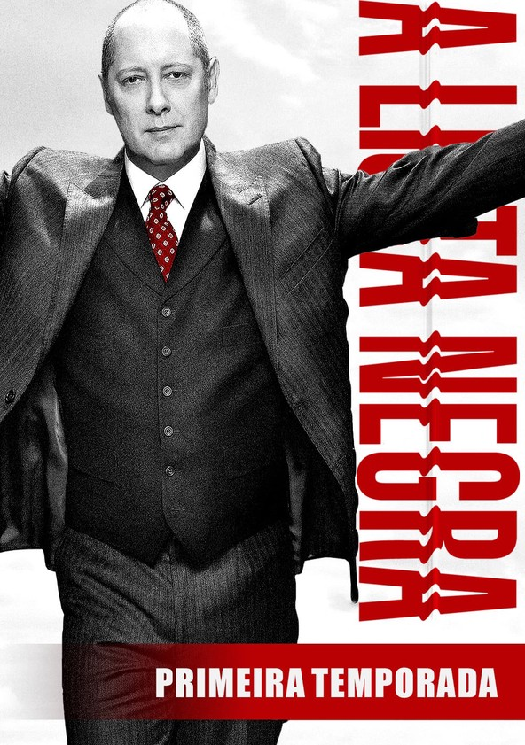
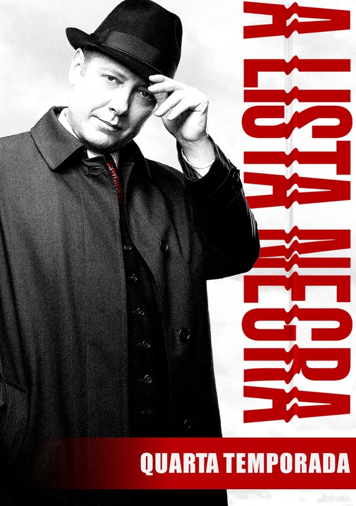
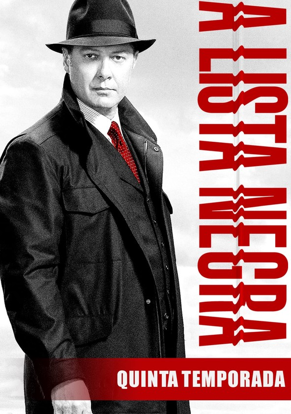

1
Temporada
Um fugitivo se rende e oferece ajuda ao FBI para capturar os criminosos mais procurados, mas com uma condição: que sua parceira seja a novata Liz Keen.
2
Temporada
Red lida com um adversário fatal e o retorno de alguém do passado. Liz questiona a obsessão de seu parceiro com um esquema de lavagem de dinheiro.
3

Temporada
Na terceira temporada, Liz está na lista dos mais procurados do FBI após ser incriminada pelo assassinato de um senador e conta apenas com a ajuda de Red.
4
Temporada
A infância perdida de Liz e a identidade de seu verdadeiro pai viram uma obsessão para ela, e Red tenta se vingar a qualquer preço de quem o traiu.
5
Temporada
Apesar das revelações impressionantes da temporada anterior, ainda restam mistérios a serem desvendados -- como o dos restos humanos que foram descobertos.
6
Temporada
Sem saber que Raymond Reddington não é quem afirma ser, Liz precisa decidir se vai ajudá-lo a encontrar o traidor que o levou ao corredor da morte.
7
Temporada
Red foi drogado e sequestrado por Katarina, mas Liz e a força-tarefa ainda têm muitas dúvidas sobre a verdadeira identidade dele.